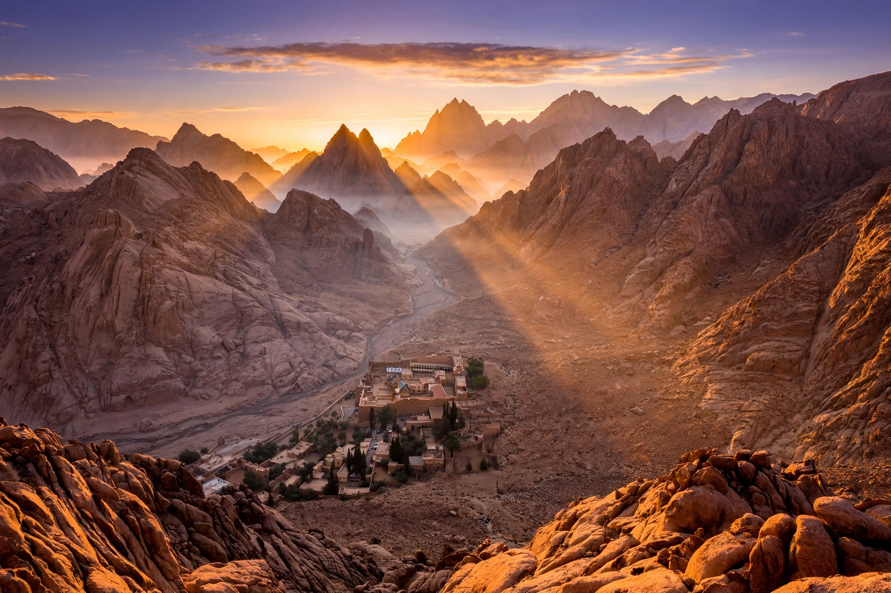

Mount Sinai
Mount Sinai (Hebrew: הַר סִינַי, Har Sīnay; Arabic: طور سيناء, Ṭūr Sīnāʾ), traditionally known as Jabal Musa (Arabic: جبل موسى, "Mount of Moses"), is a mountain in the Sinai Peninsula of Egypt that is a possible location of the biblical Mount Sinai, the place where, according to the Torah, Moses received the Ten Commandments from God. The mountain rises to 2,285 metres (7,497 ft) and lies adjacent to Saint Catherine's Monastery, one of the oldest working Christian monasteries in the world.

| Mount Sinai (Jabal Musa) | |
|---|---|
| Elevation | 2,285 m (7,497 ft) |
| Location | Saint Catherine, South Sinai Governorate, Egypt |
| Range | Sinai Mountains |
| Coordinates | 28.5394° N, 33.9750° E |
Religious significance
In the biblical narrative, Mount Sinai is where Moses led the Israelites after the Exodus from Egypt, received the Law, and where the covenant between God and Israel was established. The identification of Jabal Musa with the biblical mountain dates to the early Christian centuries; the emperor Justinian founded Saint Catherine's Monastery at its foot in the 6th century CE, on the site identified with the burning bush. The mountain is also revered in Islam, where Moses (Musa) is a major prophet.
Alternative locations
Scholars and explorers have proposed numerous alternative locations for the biblical Sinai, including sites elsewhere in the Sinai Peninsula, in the Negev, in Edom and in northwestern Arabia (Midian), such as Jabal al-Lawz. No consensus exists, and the historicity and route of the Exodus remain debated.
Ascent
Pilgrims and tourists climb the mountain, often overnight to watch the sunrise from the summit, where a small Greek Orthodox chapel and a mosque stand. Two main routes ascend the mountain: the gentler camel path (Siket El Bashait) and the steeper Steps of Penitence, traditionally said to number about 3,750 steps, carved by a monk performing penance.